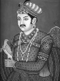

Büyük Akbar (1542-1605), Hindistan’daki Mughal İmparatorluğu’nu politik, askeri ve kültürel açıdan gücünün zirvesine ulaştırmıştır. Tahtta uzun süre kaldığı, imparatorluğu geniş topraklara yaydığı ve uzun ömürlü bir hükümet sistemi kurduğu için Roma İmparatoru Augustus (MÖ 63-MS 14) ile karşılaştırılmıştır.

Akbar dini hoşgörünün çok önemli olduğuna inanıyordu. İktidarda olduğu dönem boyunca Hindular, Müslümanlar ve Hıristiyanlar arasındaki ilişkilerin geliştirilmesine önem vermiştir. Belki de hoşgörüsünün ve ülkesindeki dini çeşitliliğin güçlü bir işareti olarak eşlerini bile farklı dinlerin mensupları arasından seçmiştir.
Akbar, günümüzde Pakistan sınırları içerisinde yer alan bir kalede doğdu. Büyük babası Babur (1483-1530), 19. yy’ın ortalarına kadar Hindistan’ın önemli bir bölümünü yönetecek olan Müslüman Mughal İmparatorluğu’nun ilk kurucusuydu. Akbar babasını henüz on dört yaşındayken kaybetmişti. 1556 yılında onun yerine tahta geçti.
İmparatorluğun gücünü arttırmak, sınırlarını genişletmek ve dinsel gerilimi azaltmak Akbar’ın en önemli amacıydı. Günümüzde Afganistan, Pakistan, Hindistan ve Bangladeş sınırlarında bulunan pek çok yeri fethetti. Fethettiği yerlerde barışı sağlamak için kimi Hindu tanrılarını korumaya aldı ve Müslüman olmayanlara yüklenen özel bir vergiyi kaldırdı. Aynı zamanda Hıristiyan misyonerleri sarayında kabul etti.
Akbar sanata büyük önem veriyordu. Onun desteklediği Hint sanatçılar binlerce resim yaptılar, edebiyat derlemeleri yayınladılar. Başkent Agra’da çok sayıda mimari başyapıt inşa edildi.
Akbar’ın ömrünün son yıllarına doğru yerine kimin geçeceği, varisleri arasında bir huzursuzluk çıkmasına neden oldu. Üç oğlundan ikisi henüz çocuk yaştayken öldüler. Diğer oğlu Prens Salim Cihangir (1569-1627), 1599 yılında babasını tahttan indirmeyi denedi. Akbar, asi oğlunu kendi varisi olarak atamaya mecbur kaldı. Cihangir babasının ardından 1605 yılında imparator oldu.
Ek Bilgiler
1- Akbar’ın torunu İmparator Şah Cihan (1592-1666), en sevdiği karısı için Hindistan’ın kuzeyinde bir saray olan Tac Mahal’i inşa ettirmiştir.
2- Akbar başkenti önce Agra’dan Lahore’a, daha sonra Lahore’dan tekrar Agra’ya taşımıştır. Bu şehirde bulunan Akbar’ın mezarı günümüzde turistler için bir çekim merkezi durumundadır.
3- Mughal imparatorları, 18. yy’da İngiltere sömürgesi olana kadar Hindistan’ın önemli bir bölümünde egemenliklerini korudular.